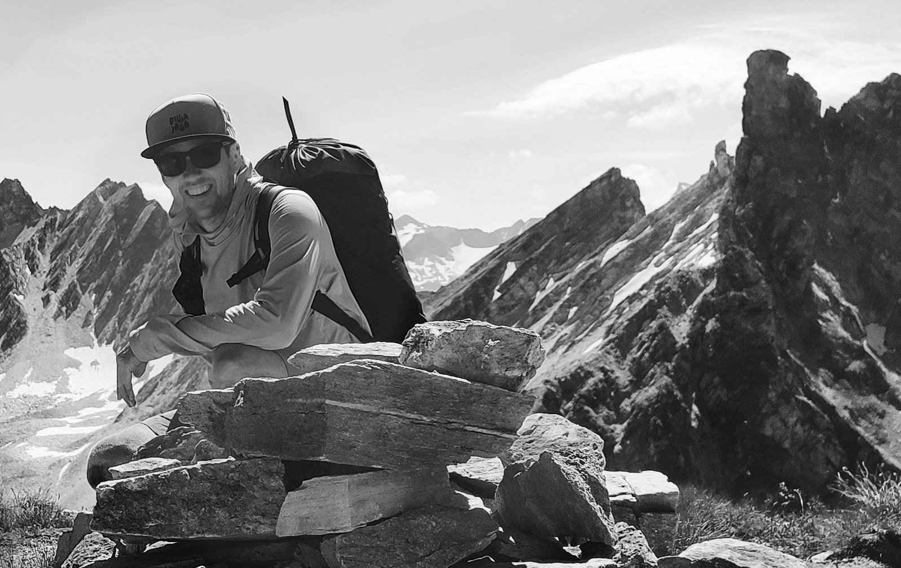
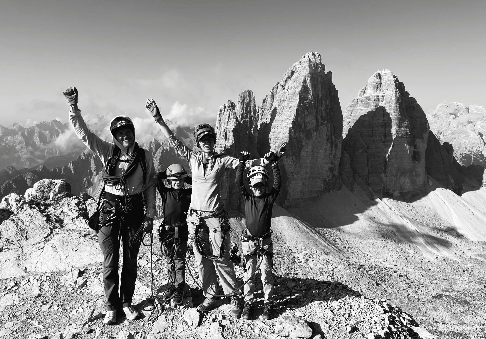

Varnost pred dosežkom
Dobre odločitve pomenijo več kot dokazovanje. Gradijo zaupanje.
O meni
Pod imenom 103 združujem dve področji svojega dela: filmsko ustvarjanje v zahtevnem terenu in prilagojena gorska doživetja za zasebne goste.
Moje profesionalno ozadje se je oblikovalo skozi več kot dvajset let dela v filmu. Delujem kot snemalec in producent, pri čemer imam posebno prednost v gorskih okoljih in na drugih težje dostopnih terenih.

Gore so stalnica v mojem življenju tudi daleč onkraj filma. S plezanjem, alpinizmom in gorništvom se aktivno ukvarjam od leta 1995, moje akademsko ozadje v geografiji pa je dodatno oblikovalo moj način razmišljanja in dela: s pripravo, previdnostjo, potrpežljivostjo in spoštovanjem posledic.

V gorah mi največ pomeni več kot samo gibanje, dosežek ali prihod na vrh. Pomembna mi je kakovost dneva: dobre odločitve, pravi tempo, pozornost do ljudi, odprt pogovor, tihi trenutki in občutek, da življenje zunaj postane nekoliko preprostejše.
Raje izberem manjše število premišljenih in dobro usklajenih sodelovanj kot velik obseg dela. To mi omogoča, da ostanem pozoren na podrobnosti, ohranjam visok standard dela in vsak produkcijski ali gorski dan oblikujem s pozornostjo, ki si jo zasluži.
Kako delam
Dobre odločitve pomenijo več kot dokazovanje. Gradijo zaupanje.
Pot, vloga ali proces morajo ustrezati ljudem in razmeram.
Priprava, izkušnje in disciplina postanejo najbolj dragocene, ko pogoji niso enostavni.
Manj sodelovanj omogoča večjo pozornost in višji standard izvedbe.
Ozadje in izkušnje
103 je selektiven po zasnovi, oseben v pristopu in namenjen ljudem, ki cenijo globino, presojo in resnično kakovost izkušnje.
Začni pogovor